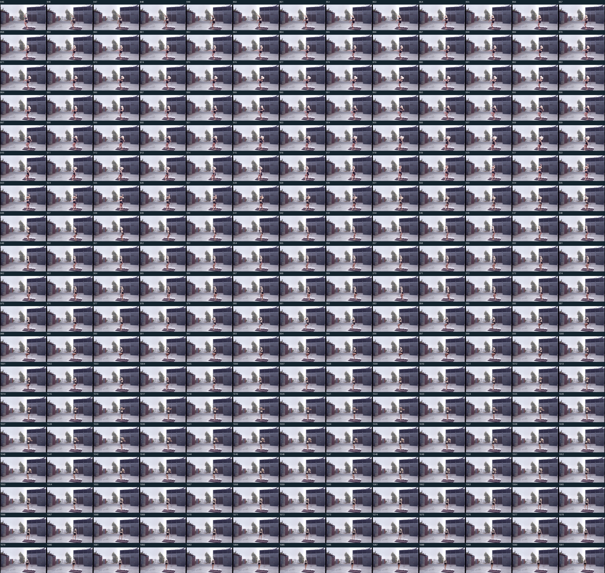
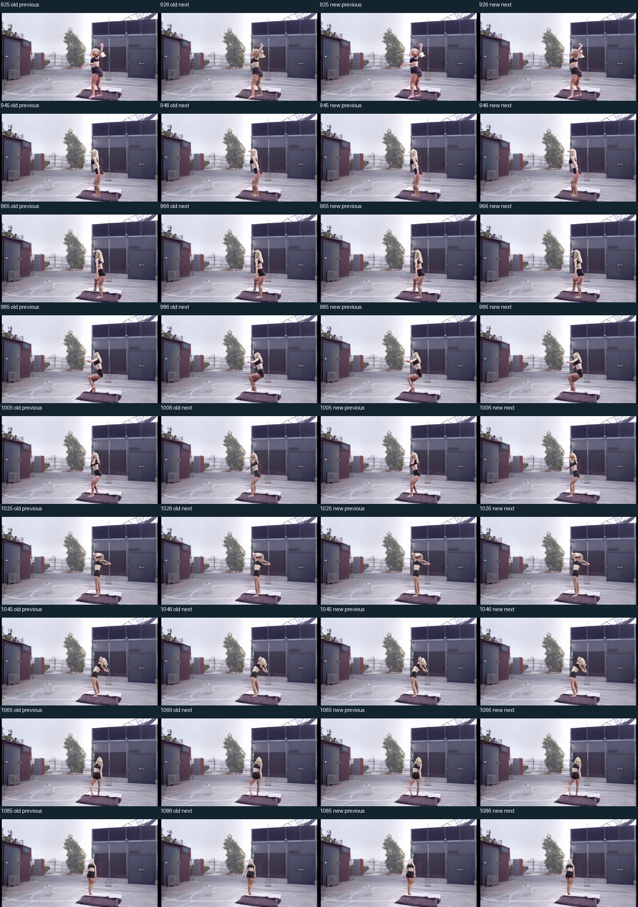
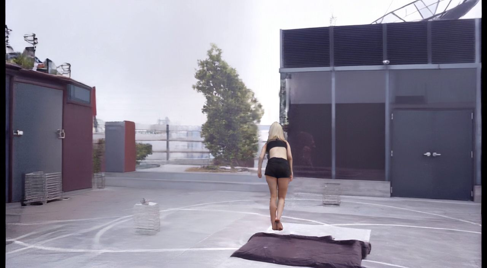
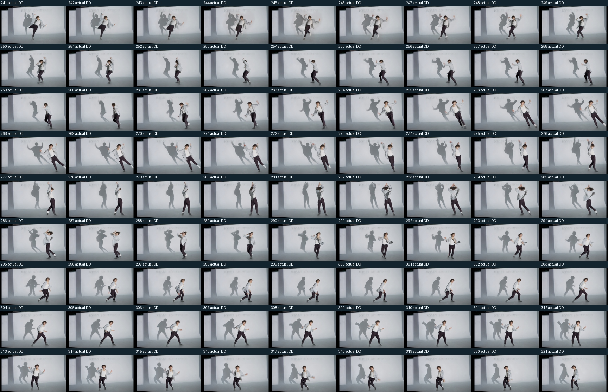
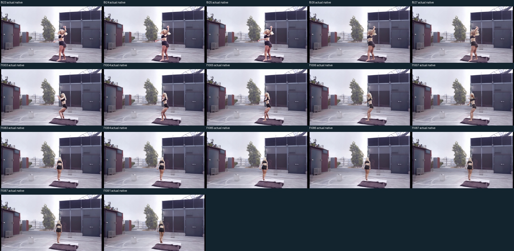
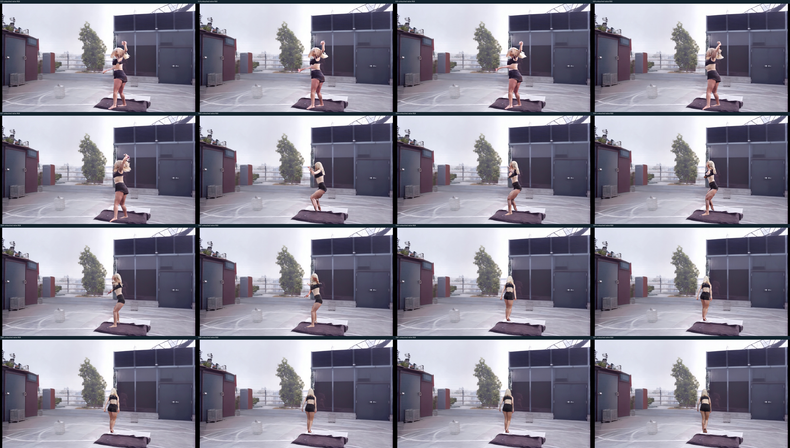
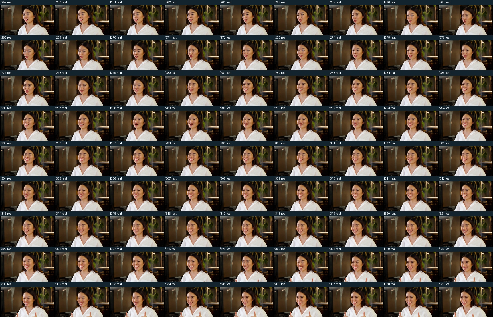
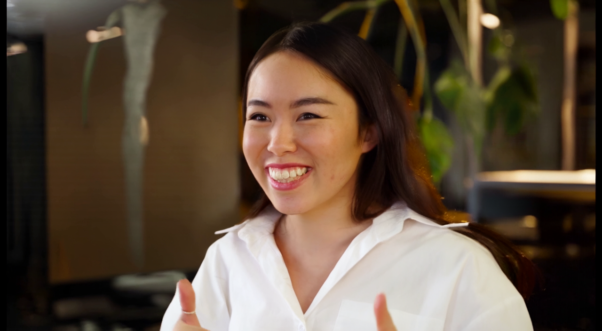
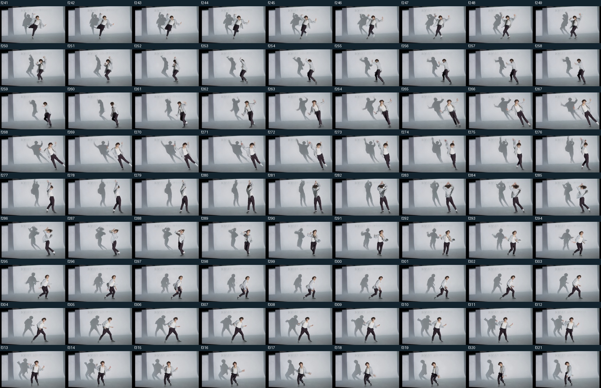
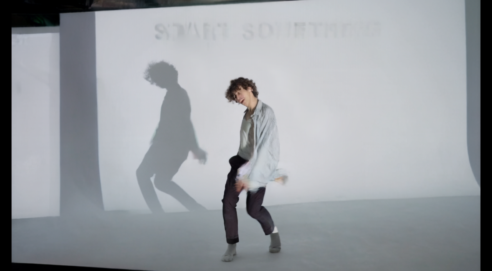

| 各自匹配的 DD 基线 保留各例原有输入和初始化，作为修复对照。 协议与核验细节保留原有输入、提示词、噪声、作者权重与初始化协议。复杂例沿用其既有初始化，不能称为纯DD无先验。 新增Hard三例使用各自实际Stage2末帧、纯DD σ=1；单窗81帧。 | f845–1091 · 247帧 · 15fps 159 KB · 清晰版 原生 DD81，保留既有目标视频初始化0.06；Stage2 +45°。 | f259–339 · 81帧 · 15fps 28 KB · 清晰版 原生 DD81，无整段目标视频初始化；正确 D 半身，Stage2 +30°。 | f241–321 · 81帧 · 25fps 42 KB · 清晰版 原生 DD81，无整段目标视频初始化；Stage2 标称13.5°。 | 已核对完整81帧：背景移动，背景项未通过；人物后段靠近画边的原因仍需结合原片镜头移动核对。 81真实帧 / 3.24秒 · 原生DD81 / source21 / CFG1 / 作者LoRA1 / 同seed42；未做输出RGB拼贴、平滑、稳定化或插帧。 完整81帧推理核验记录 | 已核对完整81帧：背景平面与画框转动，画质未通过；原片已有脚部裁切。 81真实帧 / 3.24秒 · 原生DD81 / source21 / CFG1 / 作者LoRA1 / 同seed42；未做输出RGB拼贴、平滑、稳定化或插帧。 完整81帧推理核验记录 | 已核对完整81帧，未见彩噪；背景及动作整体画质待验收。 81真实帧 / 3.24秒 · 原生DD81 / source21 / CFG1 / 作者LoRA1 / 同seed42；未做输出RGB拼贴、平滑、稳定化或插帧。 完整81帧推理核验记录 |
|---|
| 同一DD采样＋解码背景特征约束（边缘修正版） 在实际生成画面中连续跟踪人物，修正保护范围；生成RGB前固定背景解码特征。 协议与核验细节原理：在VAE输出RGB之前，让估计静止背景的解码特征贴近同一张Stage2背景参考；缩窄背景过渡边缘，减少人物附近残余闪动。 人物与运动阴影的估计保护区RGB仍逐像素不变。复杂例沿用长前文分窗的同一批DD采样（目标视频初始化0.06）；D与Hard沿用一致参考预热行的纯DD采样。新增DD采样0次、新训练0步，VAE权重不变，但前向特征改变。 这是一项推理工程修正，不称为新论文方法或未修改作者原生解码。无最终RGB背景拼贴、平滑、稳定化或插帧；估计掩码和遮挡背景均非GT。上一版完整三例保留在下方折叠对照中。 新增Hard三例使用各自实际Stage2末帧、纯DD σ=1；单窗81帧。 | 背景安全区域静止核验通过；完整247帧和九处接缝已检查，整体画质待验收。 清晰版（按需打开）247真实帧 · 跟踪人物区域保持原生成结果；未训练新权重。 核验范围共同遮罩下安全背景全部相邻帧RGB一致。遮罩为估计，人物边缘、阴影及新露出背景仍需看视频验收；约束发生在VAE生成RGB之前，未做输出RGB拼贴、平滑或插帧。 精确预览：缩小至320宽后无损编码，避免压缩新增闪动。可切换轻量预览。 精确预览文件 | 背景安全区域静止核验通过；跟踪人物保持原生成结果。 清晰版（按需打开）81真实帧 · 跟踪人物区域保持原生成结果；未训练新权重。 核验范围共同遮罩下安全背景全部相邻帧RGB一致。遮罩为估计，人物边缘、阴影及新露出背景仍需看视频验收；约束发生在VAE生成RGB之前，未做输出RGB拼贴、平滑或插帧。 精确预览：缩小至320宽后无损编码，避免压缩新增闪动。可切换轻量预览。 精确预览文件 | 背景安全区域静止核验通过；人物和跟踪到的运动阴影保持原生成结果。 清晰版（按需打开）81真实帧 · 跟踪人物区域保持原生成结果；未训练新权重。 核验范围共同遮罩下安全背景全部相邻帧RGB一致。遮罩为估计，人物边缘、阴影及新露出背景仍需看视频验收；约束发生在VAE生成RGB之前，未做输出RGB拼贴、平滑或插帧。 精确预览：缩小至320宽后无损编码，避免压缩新增闪动。可切换轻量预览。 精确预览文件 | 背景安全区域静止核验通过；原DD人物拖影及靠近画边问题仍存在。 清晰版（按需打开）81真实帧 · 跟踪人物区域保持原生成结果；未训练新权重。 核验范围共同遮罩下安全背景全部相邻帧RGB一致。遮罩为估计，人物边缘、阴影及新露出背景仍需看视频验收；约束发生在VAE生成RGB之前，未做输出RGB拼贴、平滑或插帧。 精确预览：缩小至320宽后无损编码，避免压缩新增闪动。可切换轻量预览。 精确预览文件 | 已修正遮罩误把空墙当人物的问题；固定墙面与人物保护区域核验通过，完整画质待验收。 清晰版（按需打开）81真实帧 · 实际RGB人物遮罩；同一DD最终latent，人物保护区域保持原生成RGB；未训练新权重。 核验范围旧遮罩曾把墙上错误区域保护为人物。仅更换实际RGB遮罩的同样本对照中，人物保护区域RGB对原始DD为0变化，固定墙面全部80个相邻对RGB一致；相同独立前景估计下近身>4像素平均RGB步差0.01426→0.00893。遮罩为估计，边缘仍需验收。约束发生在VAE生成RGB之前，未做输出RGB拼贴、平滑或插帧。 精确预览：缩小至320宽后无损编码，避免压缩新增闪动。可切换轻量预览。 精确预览文件遮罩修正核验证据 旧遮罩／修正遮罩／连续alpha对照 | 背景安全区域静止核验通过；人物边缘与整体动作仍待验收。 清晰版（按需打开）81真实帧 · 跟踪人物区域保持原生成结果；未训练新权重。 核验范围共同遮罩下安全背景全部相邻帧RGB一致。遮罩为估计，人物边缘、阴影及新露出背景仍需看视频验收；约束发生在VAE生成RGB之前，未做输出RGB拼贴、平滑或插帧。 精确预览：缩小至320宽后无损编码，避免压缩新增闪动。可切换轻量预览。 精确预览文件 |
|---|
| 新增完整对照：长前文分窗 让后续窗口使用更长的已有前文，减少窗口重启跳变；单窗案例复用一致参考结果。 协议与核验细节每次仍运行原生81帧DD，窗口重叠60帧，只保留已有充分前文的后续输出，减少窗口重启时的背景跳变。 复杂例完整247帧：10个上下文，其中7个新增真实DD窗口、3个复用已核验结果。原始噪声和背景约束按源帧组对齐；作者LoRA及权重不变。简单D与Hard各81帧无需分窗，本行复用下方“一致参考与VAE预热”行的原生结果，不含新增解码特征约束，未重复宣称新跑。 最终RGB无拼贴、平滑、稳定化或插帧。全背景变化均值0.415→0.408（约1.7%），人物附近0.736→0.654（约11.1%）。局部收益较大，全片改善较小，仍作为对照候选。 新增Hard三例使用各自实际Stage2末帧、纯DD σ=1；单窗81帧。 本行新增三例复用“一致参考与VAE预热”，无额外分窗采样。 | 完整247帧已核验；全背景波动小幅下降，人物附近改善；尚未判定彻底解决。 56 KB · 清晰版 完整247真实帧、246对相邻帧及9处新接缝已核验，检查覆盖地面；原目标视频初始化0.06保留。固定建筑/地面测量区域的几何位移范围约0.05–0.13像素，人物附近仍有纹理变化。 原生全247帧、9处接缝及真实片尾   推理与输入范围核验 | 完整81帧：沿用同一已核验结果 28 KB · 清晰版 本例只有一个原生81帧窗口，长前文分窗改动不适用；视频与上一版相同。未新增DD调用。 原生帧、片尾与对照   推理与输入范围核验 | 完整81帧：沿用同一已核验结果 36 KB · 清晰版 本例只有一个原生81帧窗口，长前文分窗改动不适用；视频与上一版相同。未新增DD调用。 原生帧、片尾与对照   推理与输入范围核验 | 完整81帧：新参考减轻地板/钢琴的轮廓状补全伪影；遮挡背景仍是估计，边缘和整体画质待验收。 81真实帧 / 3.24秒 · 单窗无需分窗：本格明确复用“一致参考与VAE预热”同一结果，无额外DD采样。 室内例已换用冻结LaMa生成的空背景输入参考；已知Stage2背景保留。仅推理改动，未训练新权重。 查看旧版背景补全失败对照旧版完整81帧视频 | 真实DD结果已核验；整体画质待验收。 81真实帧 / 3.24秒 · 单窗无需分窗：本格明确复用“一致参考与VAE预热”同一结果，无额外DD采样。 | 真实DD结果已核验；整体画质待验收。 81真实帧 / 3.24秒 · 单窗无需分窗：本格明确复用“一致参考与VAE预热”同一结果，无额外DD采样。 |
|---|
| 上一版：一致参考与VAE预热 去噪时约束背景，并统一参考编码与视频解码的预热上下文。 协议与核验细节去噪过程中约束可见背景，并让背景参考编码、视频解码采用一致的参考上下文，减少每窗启动时的背景闪动。保护人物与运动阴影。 三例均为完整真实DD重跑。复杂例保留原有目标视频初始化0.06；简单D和Hard为纯DD。预热参考不计真实帧，首输出会重新解码。未训练新LoRA，未在输出RGB上拼贴、平滑、稳定化或插帧。 新增Hard三例使用各自实际Stage2末帧、纯DD σ=1；单窗81帧。 | 完整247帧已核验并查看：树叶接缝闪动减轻，但人物附近仍有局部纹理变化；新版并非各处都优于上一版，全片画质待验收。 56 KB · 清晰版 树叶三处接缝最大相邻RGB变化约10.73→2.17；但近身估计背景均值0.556→0.713，并非各处都更好。请对照下方上一版，局部指标不是画质提升比例。 原生帧、片尾与对照   推理与输入范围核验 | 完整81帧已核验并查看：保留正确D半身人物，修正头发旁原本可见背景被参考图改色的问题；动作与细节仍需结合视频验收。 28 KB · 清晰版 输入参考恢复Stage2已可见背景；头发旁黑色物体首帧相邻RGB变化约17.07→0.57。全81帧与人物局部均已检查，不把长发运动算作静止背景抖动。 原生帧、片尾与对照   推理与输入范围核验 | 完整81帧已核验并查看：背景稳定性改善；人物、运动阴影与局部细节仍需结合视频验收。 36 KB · 清晰版 全81帧左墙最大相邻RGB变化 0.171；同时查看完整人物、运动投影与全帧残差，不能仅凭墙面指标判全片画质通过。 原生帧、片尾与对照  推理与输入范围核验 | 完整81帧：新参考减轻地板/钢琴的轮廓状补全伪影；遮挡背景仍是估计，边缘和整体画质待验收。 81真实帧 / 3.24秒 · 与本列原生基线同输入、同初始噪声。推理改动；未训练新权重。 室内例已换用冻结LaMa生成的空背景输入参考；已知Stage2背景保留。仅推理改动，未训练新权重。 查看旧版背景补全失败对照旧版完整81帧视频 | 真实DD结果已核验；整体画质待验收。 81真实帧 / 3.24秒 · 与本列原生基线同输入、同初始噪声。推理改动；未训练新权重。 | 真实DD结果已核验；整体画质待验收。 81真实帧 / 3.24秒 · 与本列原生基线同输入、同初始噪声。推理改动；未训练新权重。 |
|---|
| 上一版固定背景修复（对照） 每步去噪约束可见背景，作为未加入一致预热的修复对照。 协议与核验细节每步去噪约束可见背景靠近同一Stage2参考，保护人物动作。复杂例统一输入背景与加噪，并缩窄人物输入边缘，减少旧背景带来的黑边。 本次更新复杂case完整247帧。简单D与Hard沿用已有完整结果；Hard另做协议回归，全部81帧与原结果一致。未训练新LoRA，最终视频未做背景拼贴、稳定化、平滑或插帧。 新增Hard三例使用各自实际Stage2末帧、纯DD σ=1；单窗81帧。 | 完整247帧已核验并查看：远处背景漂移和人物周围带状重影明显减轻，旧黑边进一步减少；局部模糊与接缝变化仍在，全片画质尚未通过。 55 KB · 清晰版 右门全247帧平均相邻RGB变化：2.671 → 0.290，包含接缝。仅是远处背景诊断，不代表人物附近或全片画质通过。 原生帧、片尾与对照   推理与输入范围核验 | 完整81帧已核验并查看；远处背景变化减轻，仍需结合动作验收。 27 KB · 清晰版 左墙平均相邻帧RGB变化：0.299 → 0.185。这是局部诊断，不能当作画质提升比例。 原生帧、片尾与对照   推理与输入范围核验 | 完整81帧；明显漂移已减轻，人物附近细微变化继续核验。 36 KB · 清晰版 两侧墙面边界全81帧变化约0.07 / 0.04像素；原生DD约51 / 54像素。局部边界测量不代表全片画质通过。 原生帧、片尾与对照  推理与输入范围核验 | 画质未通过：新露出的地板/钢琴补全不自然。人物后段靠近画边；原片有镜头移动，尚不能据此断言动作跟随错误。未见彩噪。 81真实帧 / 3.24秒 · 与本列原生基线同输入、同初始噪声。推理改动；未训练新权重。 | 真实DD结果已核验；整体画质待验收。 81真实帧 / 3.24秒 · 与本列原生基线同输入、同初始噪声。推理改动；未训练新权重。 | 真实DD结果已核验；整体画质待验收。 81真实帧 / 3.24秒 · 与本列原生基线同输入、同初始噪声。推理改动；未训练新权重。 |
|---|